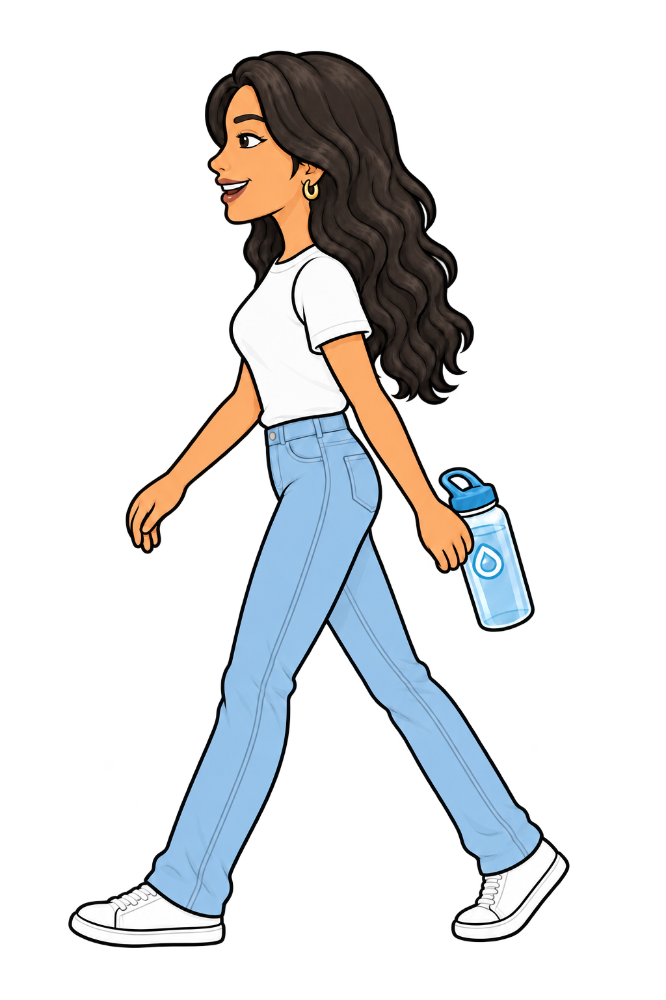
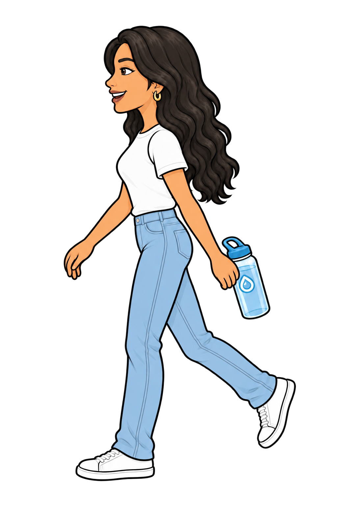
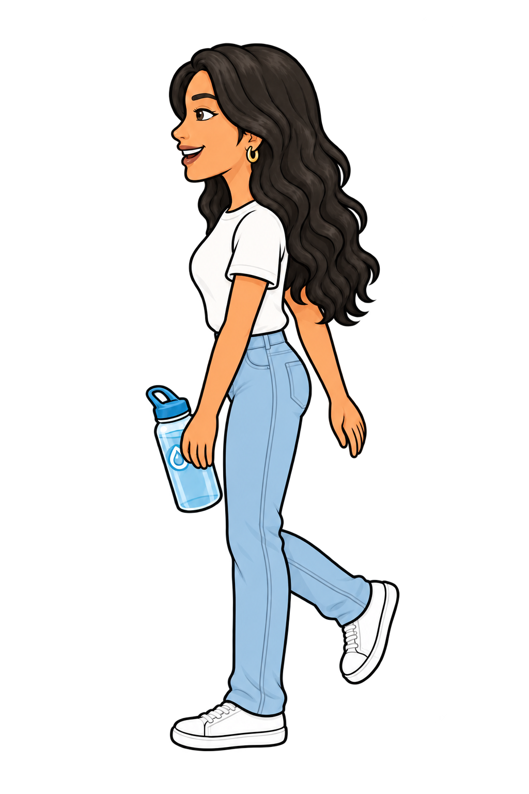
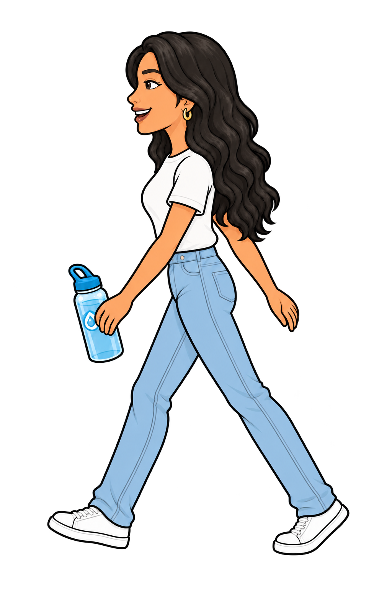
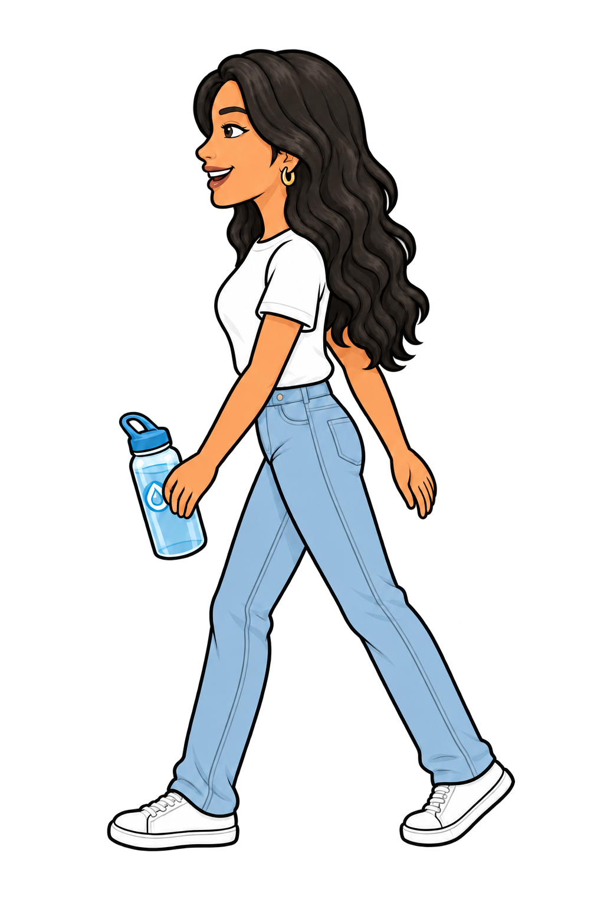
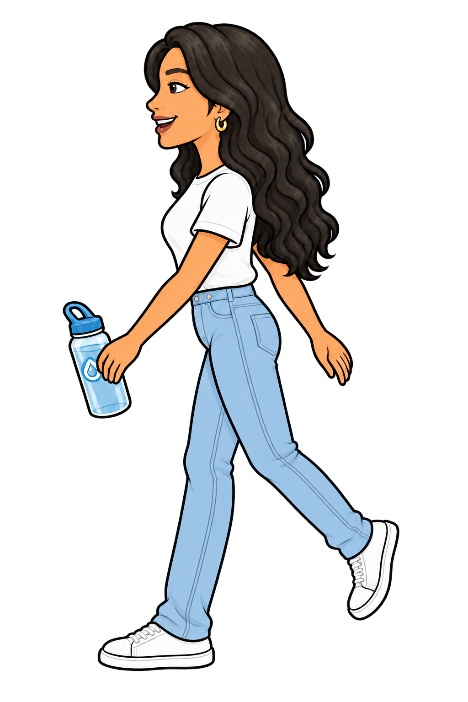
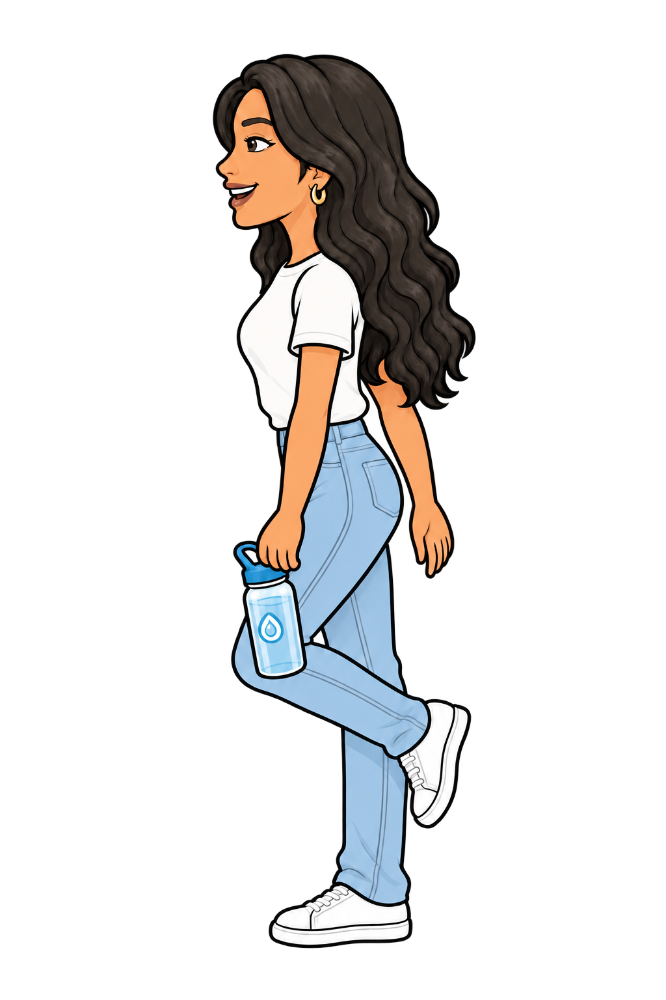
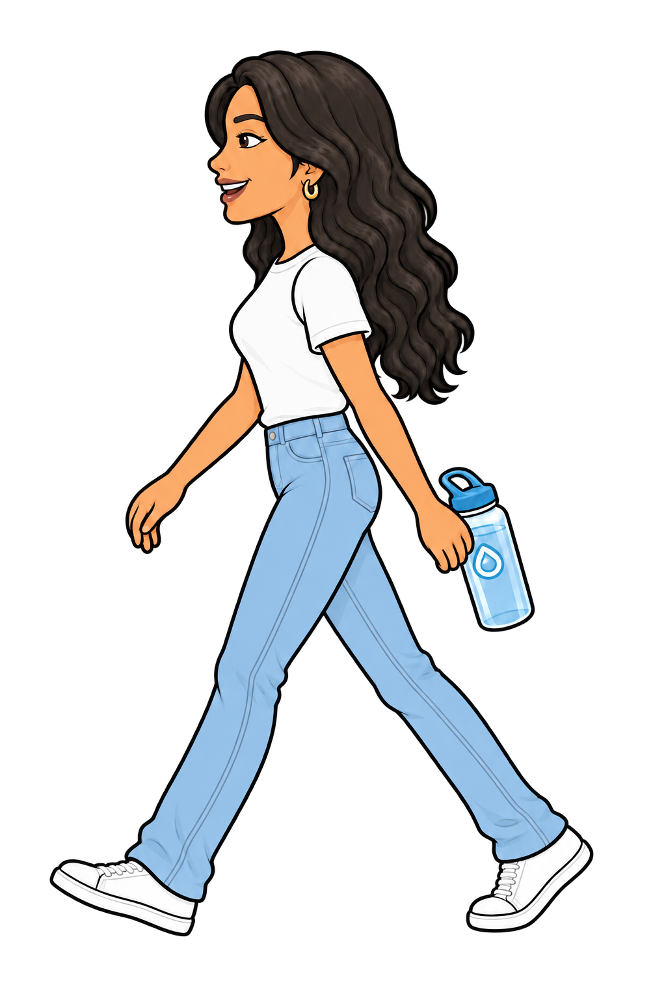

Read left to right, then the second row. The first leg supports while the other lifts, passes and reaches. Then they switch. Both jeans legs are light blue; the outlines show which leg is in front.







